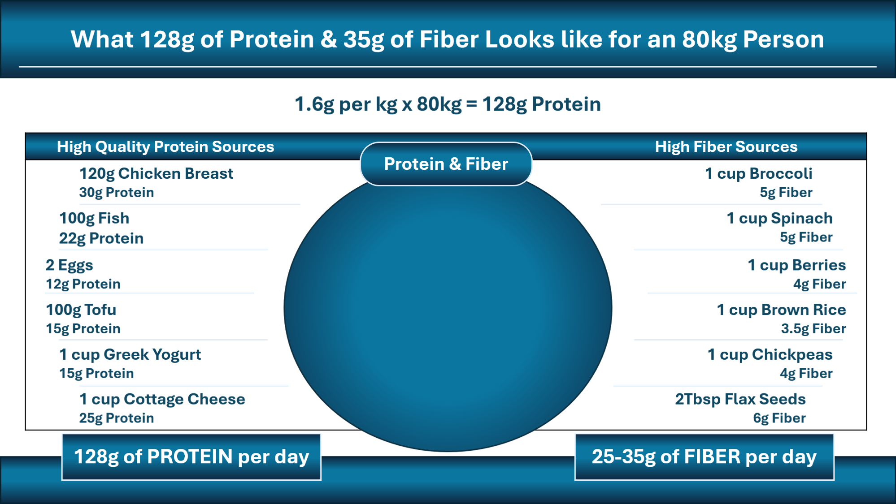

This page explains the nutrition principles that can support your joint replacement recovery, help your body heal more efficiently, and keep you feeling stronger before and after surgery. Use these suggestions as a practical guide while you prepare for your procedure.
As a joint replacement surgeon, one of the most common questions I hear is: “What can I do before surgery to make my recovery smoother?” The good news is that there is a lot you can do—long before you arrive in the operating room—to support your healing, strengthen your body, and improve your overall wellbeing.
Think of this period as preparing the soil before planting a garden. The healthier the foundation, the better the outcome.
Below are evidence-informed, practical steps you can take to support your body before surgery. These are general principles—not personalized medical advice—and your healthcare team can help tailor recommendations to your individual needs.
After joint replacement, your body is busy rebuilding soft tissues, repairing surgical sites, and restoring strength. Eating well before surgery gives your body the raw materials it needs for that work.
Healthy sources of protein and fiber are especially important. Protein supports tissue repair, and fiber helps maintain gut health, stabilize blood sugar, and prevent constipation—something many patients struggle with after surgery.
You may have heard the phrase “food is medicine.” While not every food acts like a medication, certain eating patterns can have powerful effects on metabolism, inflammation, and long-term health. For example:
Change can feel overwhelming, but remember: every meal is an opportunity to help your body heal.
If you want individualized guidance, a registered dietitian can help you choose foods and patterns of eating that align with your goals—whether that’s weight loss, longevity, or simply eating more intentionally.
While everyone’s needs differ, research suggests that during rehabilitation, many people benefit from:
These are general ranges from published research—not personalized targets—and your healthcare team can help you understand what’s appropriate for you.

There is no single “joint replacement diet.” What we’re really talking about is adopting a sustainable lifestyle that supports your health.
Across all these patterns, the themes are the same: whole foods, high protein, high fiber, healthy fats, and minimizing highly processed foods.
Not everyone needs or wants to lose weight before surgery, but if it’s part of your goals, here are helpful principles:
Reducing added sugar is one of the simplest and most powerful steps you can take to improve your health before surgery.
Hidden sugars are common in packaged foods like breads, sauces, flavored yogurts, granola, dressings, and marinades.
When reading labels, check the first three ingredients. If sugar appears there, consider that food a dessert in disguise.
Whole fruits are great; fruit juices behave like soda in the bloodstream.
Sleep is one of the most underrated tools for healing.
Preparing for joint replacement is not just about the day of surgery—it’s about supporting your whole body in the weeks and months beforehand. Nutrition, movement, sleep, and lifestyle choices all play a role in how you feel going into surgery and how you recover afterward.
Every positive change you make now is an investment in your future mobility, comfort, and independence.